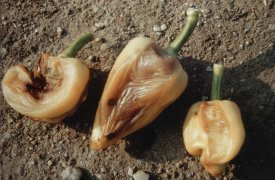

Baktériumos lágyrothadás
Pseudomonas syringae
Nedves körülmények között - csapadékos
időjárás, esőszerű öntözés - gyakran taláunk kissé vagy teljesen rothadó
paprikabogyót ültetvényünkben. A baktérium vetőmaggal nem terjed, hanem a növényre
felverődő vízzel, seben keresztül jut be a növény szöveteibe. A fertőzést
követően a bogyó lágyan világosbarnán rothad, az epidermisz ép marad. Az elrothadt
bogyó lehull a földre, szétesve biztosítja a baktériumok újabb felverődési
lehetőségét. Néha a kórokozó a szárba is behatol, amelynek súlyos levélhullás,
ágelhalás lesz a következménye.
A száraz viszonyok között a beteg bogyók beszáradva értéktelenek.
Védekezés:
- Fertőzött területre 3 évig ne ültessünk paprikát.
- Beteg növényi részek leszedése, megsemmisítése a kórokozó terjedését
mérsékli.
- Árasztásos öntözésnél a baktérium terjedése lelassul.
Vegyi védekezés:
 Rézoxiklorid 50 WP
Rézoxiklorid 50 WP
 Kasumin
2 EC
Kasumin
2 EC